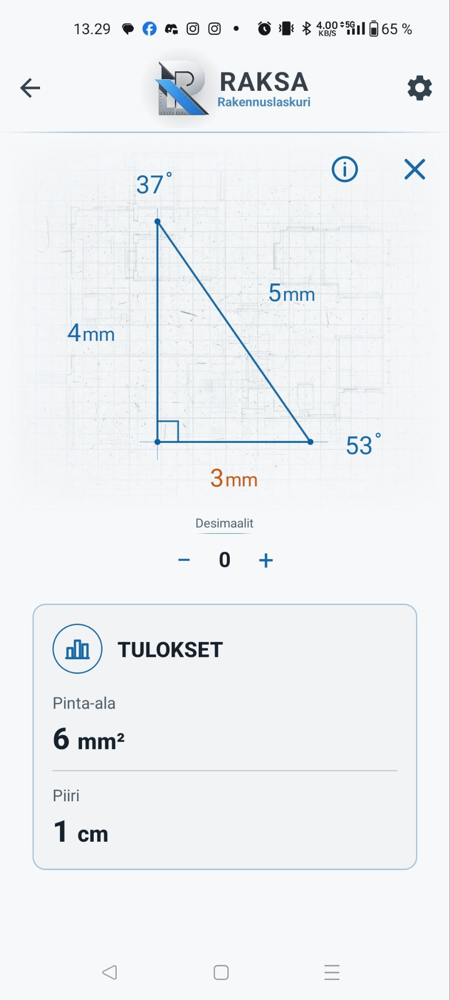

01
Kolmiolaskin
Anna kaksi riippumatonta arvoa, joista vähintään toinen on sivu. Raksa laskee muut sivut, kulmat, pinta-alan ja piirin.
- Kaksi sivua tai yksi sivu ja yksi kulma
- Yksiköt millimetristä kilometriin
- Tulokset 0–3 desimaalilla
